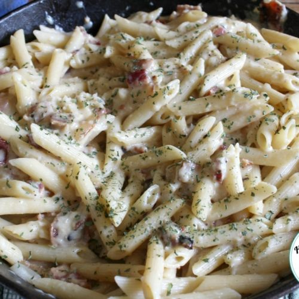

Pasta Carbonara

Ingredients
- Penne Noodles
- Chopped bacon - Or real bacon bits if you're in a hurry
- Mushrooms - Fresh or canned.
- Chopped keilbasa sausage
- Minced garlic - Fresh (5 cloves) or jarred (1 tbs)
- Heavy cream
- mozzerella cheese - Fresh (grated) or jarred
- Salt
- Pepper
- Butter
- (Optional) Other seasonings to taste
- Grated cheese of your choice
- Parsley
Directions
- place water in a pot with salt and bring to a boil.
- While water is boiling chop keilbasa into 1/4 inch pieces.
- When water gets to a rolling boil add noodles to pot.
- In a second pot, melt 1 tablespoon of butter with garlic, keilbasa, bacon, and mushrooms
- Let items simmer in pot at medium heat until fragrent and keilbasa is lightly charred.
- Deglaze with heavy cream and add in mozzerella cheese.
- Let sauce get to a rolling boil on medium heat, add seasonings to taste.
- Once pasta is done, drain all but a half cup of pasta water and let stand until sauce is ready.
- When sauce is boiling add one cup of grated cheese (Or more to taste).
- Pour pasta sauce into noodles, stir until well combined and add in fresh parsley. If pasta looks a little dry, add in pasta water.
- Once combined, serve with garlic bread or a side salad.